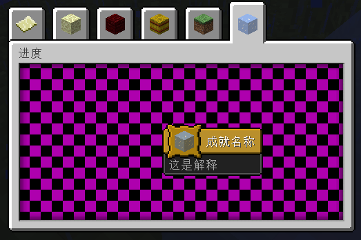

操作说明：
· 顶端标签仅作为进度浏览，请勿手动切换（自动记录每个标签因果关系，如手动切换则会导致问题）
· 如图，tiaojian1是唯一一个条件的名称，这个名称不能重复
· 条件右侧选框为条件触发器类型，填好名称，选好后点击右侧的+按钮添加
· 双击条件进入条件设置
· 一部分按钮是通过其他标签来进行值的设置的，这些按钮左侧都有复选框，勾上则会跳转到相应的标签
· 每个标签设置完成后点击生成按钮，生成并跳回上一个标签
· 全部设置完成后则会跳转到根标签，选中条件点击需求列表左侧的+则加入一行需求
· =>按钮为合并两个条件，在需求列表中条件的关系是或，如合并两个条件则那两个条件的关系就为与
· 点击生成后可以点击检索来检查是否有数据问题，如有数据问题点生成文件必定会未响应
· 点击生成文件并把文件放入相应目录则生效
图例生成的样子：
紫黑色是没有材质的意思，也就是上方设置背景的地方，用命名空间路径的方式设置地址。
我们生成的文件应放于世界名\data\advancements\命名空间名
瞬间229级√
代码：
{
"display": {
"icon": {
"item": "minecraft:ice",
"data": 0
},
"title": "成就名称",
"description": "这是解释",
"frame": "challenge",
"show_toast": true,
"announce_to_chat": true,
"hidden": true
},
"rewards": {
"experience": 50000
},
"criteria": {
"tiaojian1": {
"trigger": "minecraft:placed_block",
"conditions": {
"block": "minecraft:ice"
}
}
},
"requirements": [
[
"tiaojian1"
]
]
}